Chapter 4 Plotting with ggplot2
ggplot2 is a plotting package that makes it simple to create complex plots from data stored in a data frame. It provides a programmatic interface for specifying what variables to plot, how they are displayed, and general visual properties. Therefore, we only need minimal changes if the underlying data change or if we decide to change from a bar plot to a scatterplot. This helps in creating publication quality plots with minimal amounts of adjustments and tweaking.
First, let’s load ggplot2.
library(ggplot2)ggplot2 functions work best with data in the ‘long’ format, i.e., a column for every dimension, and a row for every observation. Well-structured data will save you lots of time when making figures with ggplot2
ggplot2 graphics are built step by step by adding new elements. Adding layers in this fashion allows for extensive flexibility and customization of plots.
Each chart built with ggplot2 must include the following
Data
Aesthetic mapping (aes)
- Describes how variables are mapped onto graphical attributes
- Visual attribute of data including x-y axes, color, fill, shape, and alpha
- Describes how variables are mapped onto graphical attributes
Geometric objects (geom)
- Determines how values are rendered graphically, as bars (geom_bar), scatterplot (geom_point), line (geom_line), etc.
Thus, the template for graphic in ggplot2 is:
<DATA> %>%
ggplot(aes(<MAPPINGS>)) +
<GEOM_FUNCTION>()Remember from the last lesson that the pipe operator %>% places the result of the previous line(s) into the first argument of the function. ggplot() is a function that expects a data frame to be the first argument. This allows for us to change from specifying the data = argument within the ggplot function and instead pipe the data into the function.
- use the
ggplot()function and bind the plot to a specific data frame.
yearly_count %>% ggplot()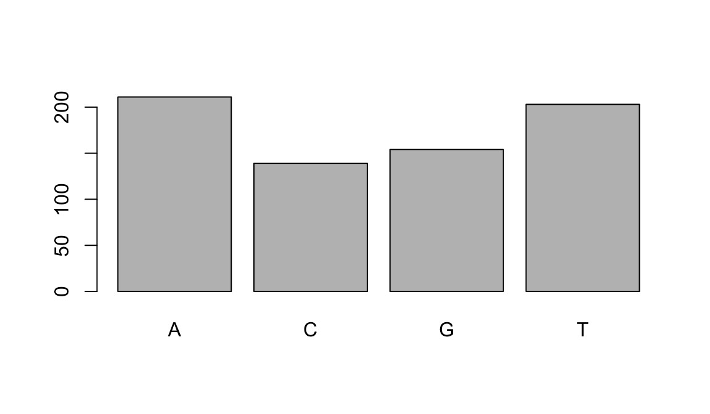
Is the same as
ggplot(data=yearly_count)
- define a mapping (using the aesthetic (
aes) function), by selecting the variables to be plotted and specifying how to present them in the graph, e.g. as x/y positions or characteristics such as size, shape, color, etc.
yearly_count %>%
ggplot(aes(x=Year, y=TotalCount))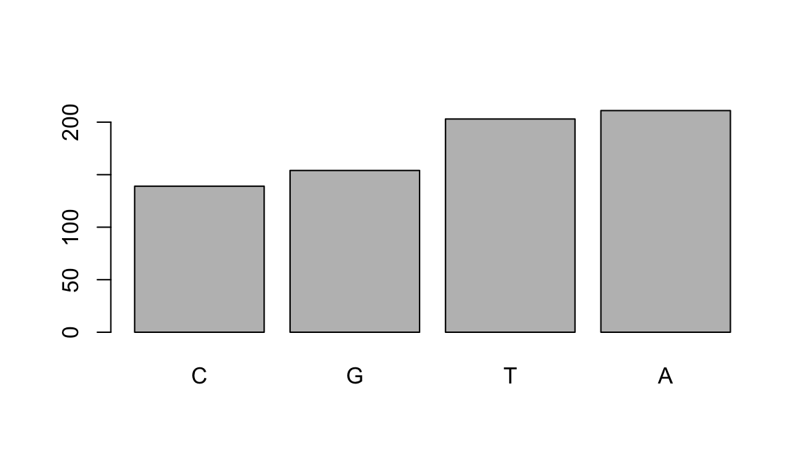
This can also be written more concisely:
yearly_count %>%
ggplot(aes(Year, TotalCount))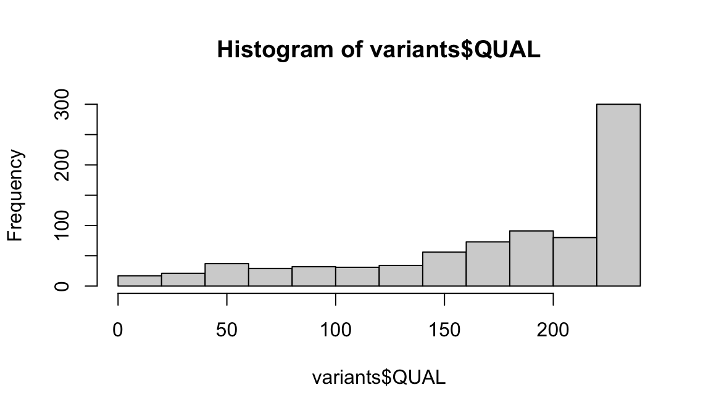
- add ‘geoms’ – graphical representations of the data in the plot (points, lines, bars).
ggplot2offers many different geoms for common graph types. To add a geom to the plot use the+operator. Note to that you can save plots as objects.
year_total_line <-
yearly_count %>%
ggplot(aes(x=Year, y=TotalCount)) +
geom_line()
year_total_line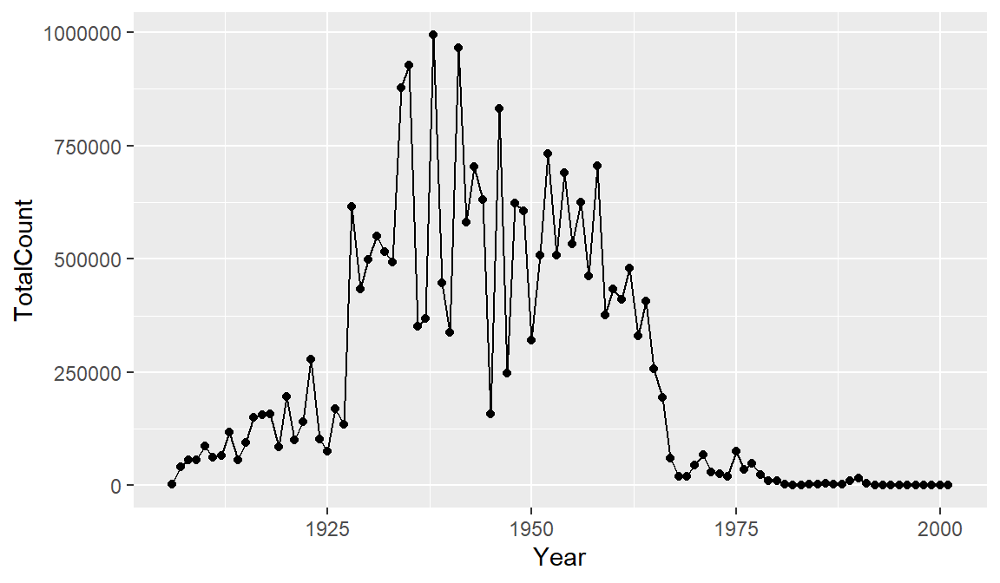
It might be nice to see where each data point falls on the line. To do this we can add another geometry layer.
year_total_line <-
yearly_count %>%
ggplot(aes(x=Year, y=TotalCount)) +
geom_line() +
geom_point()
year_total_line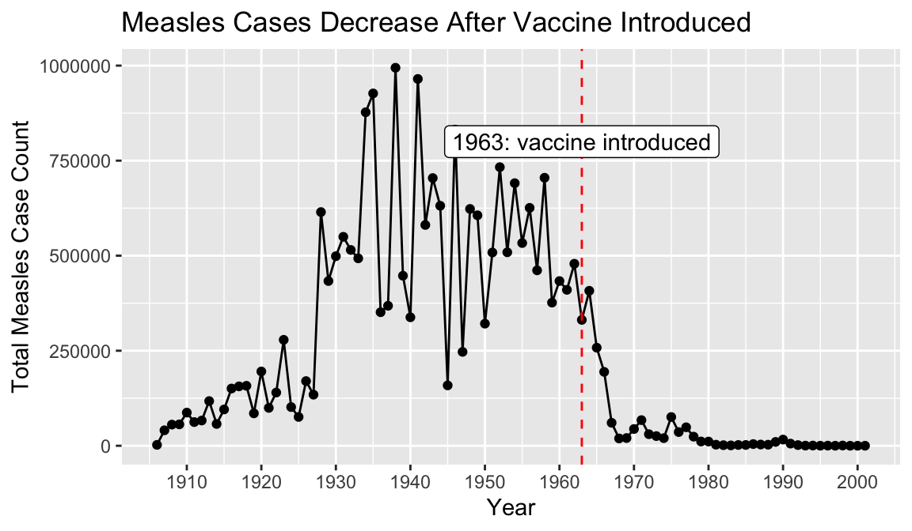
The + in the ggplot2 package is particularly useful because it allows you to modify existing ggplot objects. This means you can easily set up plot templates and conveniently explore different types of plots, so the above plot can also be generated with code like this:
year_total_line <- year_total_line + geom_point()
year_total_line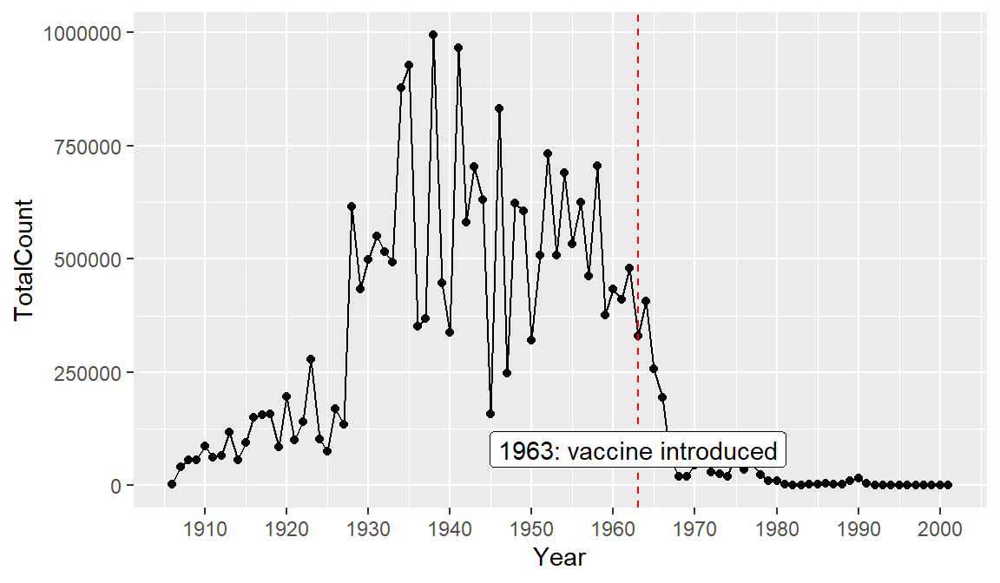
There are many ways to customize your plot, like changing the color or line type, adding labels and annotations. One thing that would make our graph easier to read is tick marks at each decade on the x-axis.
year_total_line <-
yearly_count %>%
ggplot(aes(x=Year, y=TotalCount)) +
geom_line() +
geom_point() +
scale_x_continuous(breaks = seq(1900, 2000, 10))
year_total_line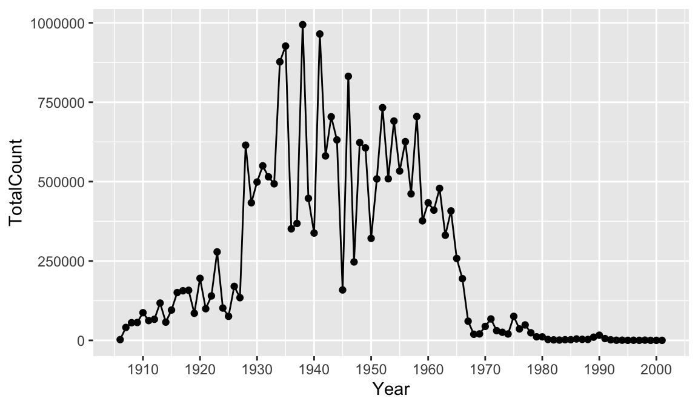
Perhaps we would like to add some more information to our graph for context. Let’s drop a reference line at 1963 to clearly indicate on the graph when the vaccine was introduced. To do this we add a geom_vline() and the annotate() function. There are multiple ways of adding lines and text to a plot, but these will serve us well for this case. Note that you can change features of lines such as color, type, and size.
year_total_line <-
yearly_count %>%
ggplot(aes(x=Year, y=TotalCount)) +
geom_line() +
geom_point() +
scale_x_continuous(breaks = seq(1900, 2000, 10)) +
geom_vline(xintercept = 1963, color = "red", linetype= "dashed") +
annotate(geom = "label", x=1963, y=80000, label="1963: vaccine introduced")
year_total_line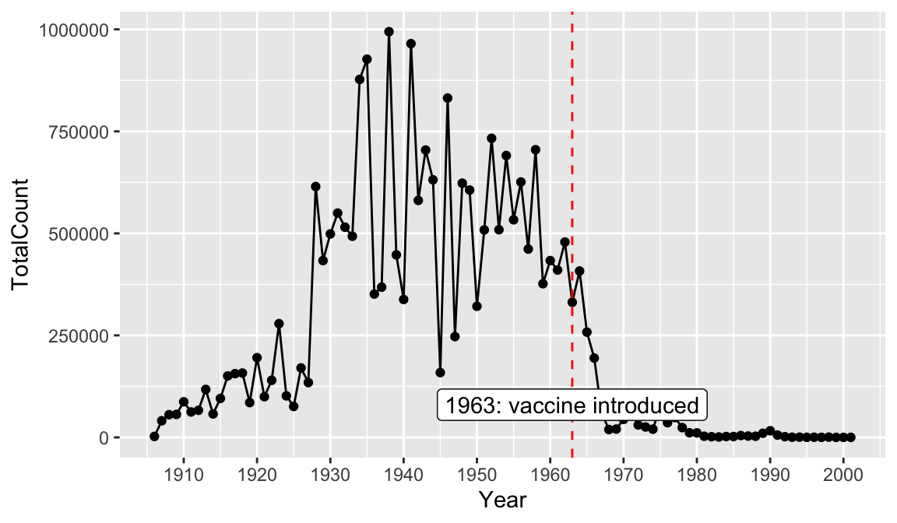
Finally, let’s add a title and axis labels to our plot with the labs() function. Note that axis labels will automatically be supplied from the column names, but you can use this function to override those defaults.
year_total_line <-
yearly_count %>%
ggplot(aes(x=Year, y=TotalCount)) +
geom_line() +
geom_point() +
scale_x_continuous(breaks = seq(1900, 2000, 10)) +
geom_vline(xintercept = 1963, color = "red", linetype= "dashed") +
annotate(geom = "label", x=1963, y=800000, label="1963: vaccine introduced") +
labs(title = "Measles Cases Decrease After Vaccine Introduced", x = "Year", y = "Total Measles Case Count")
year_total_line
Finally, let’s save our plot to a png file, so we can share it or put it in reports. To do this we use the function called ggsave().
ggsave("images/yearly_measles_count.png", plot = year_total_line)4.1 Barplots
To emphasize that ggplot2 is part of the tidyverse along with dplyr, consider that you could clean some data and plot it in one step. Below we create a new plot that takes a closer look at measles cases in 1963. First we filter our dataset to look at rows for 1963, and then we use geom_bar to view each state.
#Combine data cleaning and plotting in one step
#plot the counts for each state in a bar graph in the year 1963, year vaccine was introduced.
count_1963 <-
yearly_count_state %>%
filter(Year == 1963) %>%
ggplot(aes(x = State, y = TotalCount)) +
geom_bar(stat = "identity") +
theme(axis.text.x = element_text(angle = 90))
count_1963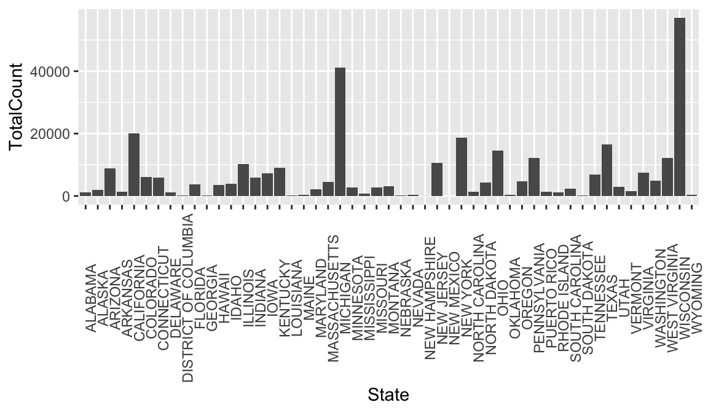
rate_1963 <-
rate_by_year %>%
filter(Year == 1963) %>%
ggplot(aes(x = State, y = rate)) +
geom_bar(stat = "identity") +
theme(axis.text.x = element_text(angle = 90))
rate_1963## Warning: Removed 1 rows containing missing values (position_stack).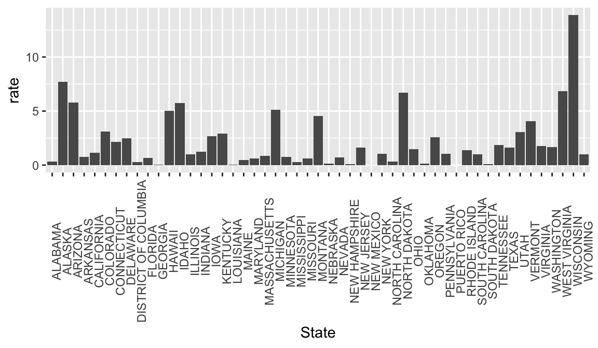
It can be helpful to look at bar graphs sorted
rate_1963 <-
rate_by_year %>%
filter(Year == 1963) %>%
ggplot(aes(x = reorder(State, -rate), y = rate)) +
geom_bar(stat = "identity") +
theme(axis.text.x = element_text(angle = 90))
rate_1963## Warning: Removed 1 rows containing missing values (position_stack).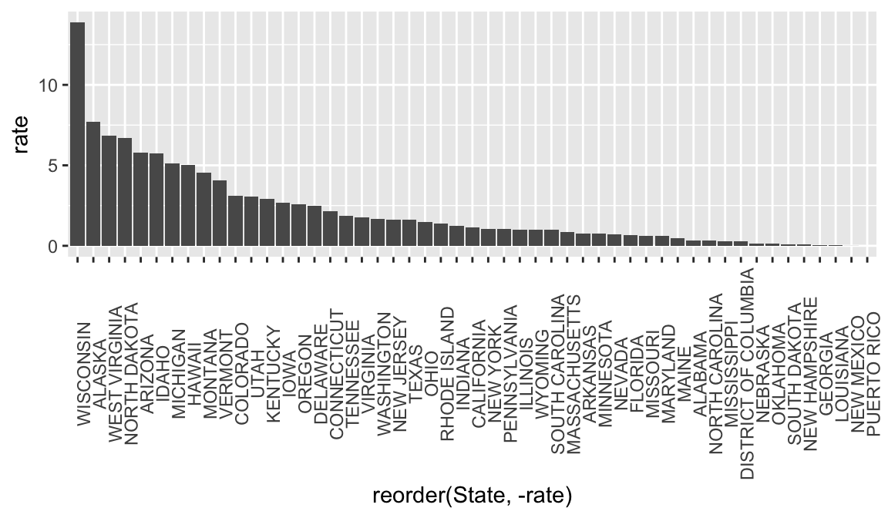